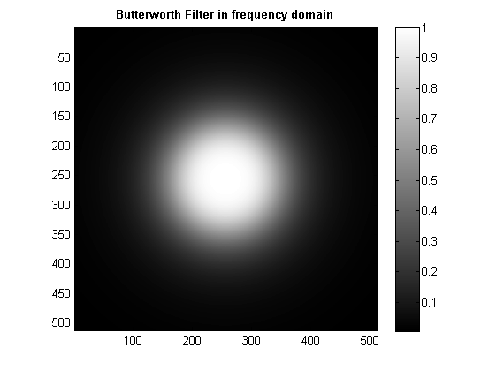
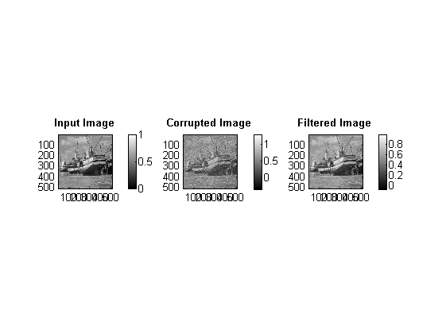
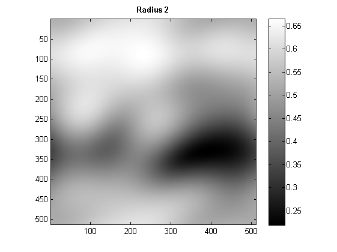
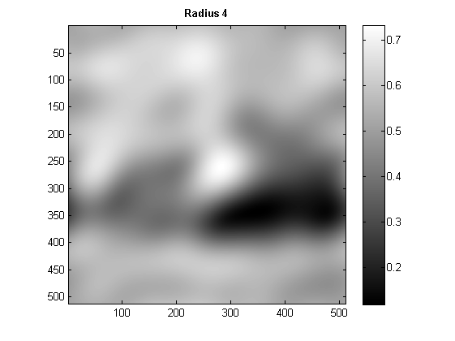
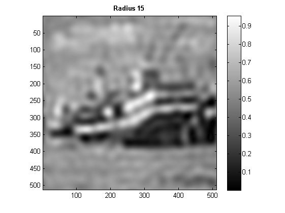
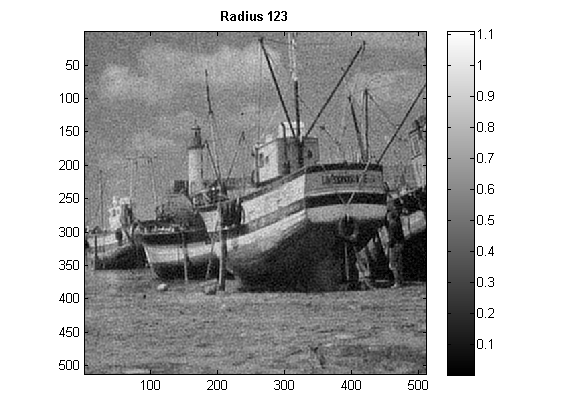
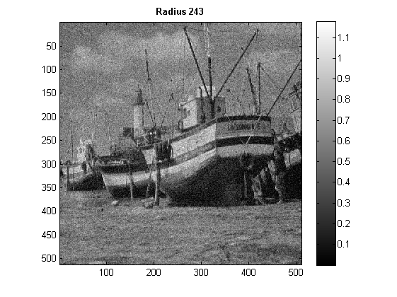

CS 663 : Digital Image Processing : Assignment 3
Question 1: Fourier Analysis
tic; num = 200; ColorScale = [ [0:1/(num-1):1]' , [0:1/(num-1):1]' , [0:1/(num-1):1]' ]; imgInput = load('../data/boat.mat'); imgInput = double(imgInput.imageOrig/255); [rows, columns] = size(imgInput); imgCorrupted = imgInput+(0.1*(max(max(imgInput)))-(min(min(imgInput))))*randn(size(imgInput)); D0=100; n=2; [imgFiltered, filter] = myButterworthFiltering(imgCorrupted, n, D0); save '../images/Q1_filtered_image' imgFiltered; save '../images/Q1_butterworth_filter' filter; imgFiltered = real(imgFiltered); RMSD = sqrt(sum(sum((imgInput-imgFiltered).^2))/(rows*columns)); figure; imagesc(filter); colormap(ColorScale); colormap gray; daspect ([2 2 2]);% axis tight; title('Butterworth Filter in frequency domain', 'FontWeight','bold'); colorbar; figure; subplot(1,3,1), imagesc(imgInput); title('Input Image', 'FontWeight','bold'); colorbar; colormap(ColorScale); colormap gray; daspect ([2 2 2]); axis tight; axis on; subplot(1,3,2), imagesc(imgCorrupted); title('Corrupted Image', 'FontWeight','bold'); colorbar; colormap(ColorScale); colormap gray; daspect ([2 2 2]); axis tight; axis on; subplot(1,3,3), imagesc(imgFiltered); title('Filtered Image', 'FontWeight','bold'); colorbar; colormap(ColorScale); colormap gray; daspect ([2 2 2]); axis tight; axis on; 
%Optimal parameter found for D0
D0
D0 = 100
%RMSD value found for the optimal value of RMSD
RMSD
RMSD =
0.0441
%RMSD for 0.95*D0
[imgFiltered, filter] = myButterworthFiltering(imgCorrupted, n, 0.95*D0);
imgFiltered = real(imgFiltered);
RMSD = sqrt(sum(sum((imgInput-imgFiltered).^2))/(rows*columns))
RMSD =
0.0442
%RMSD for 1.05*D0
[imgFiltered, filter] = myButterworthFiltering(imgCorrupted, n, 0.95*D0);
imgFiltered = real(imgFiltered);
RMSD = sqrt(sum(sum((imgInput-imgFiltered).^2))/(rows*columns))
RMSD =
0.0442
%Circular Mask percent = [88,91,94,97,99]; %Percentage of energy R = zeros(size(percent)); %The radii corresponding to the given percentage values RMSD = zeros(size(percent)); for i = 1:length(percent) R(i) = findR(imgCorrupted, percent(i)); imgFiltered = myIdealLowPassFilter(imgCorrupted, R(i)); RMSD(i) = sqrt(sum(sum((imgInput-imgFiltered).^2))/(rows*columns)); figure; imagesc(imgFiltered); t = sprintf('Radius %d',R(i)); title(t, 'FontWeight','bold'); colorbar; colormap(ColorScale); colormap gray; daspect ([2 2 2]); axis tight; axis on; end    
R and RMSD for 88% of total energy
R(1) RMSD(1)
ans =
2
ans =
0.1422
R and RMSD for 91% of total energy
R(2) RMSD(2)
ans =
4
ans =
0.1282
R and RMSD for 94% of total energy
R(3) RMSD(3)
ans =
15
ans =
0.0894
R and RMSD for 97% of total energy
R(4) RMSD(4)
ans =
123
ans =
0.0520
R and RMSD for 99% of total energy
R(5) RMSD(5) toc;
ans =
243
ans =
0.0838
Elapsed time is 13.112954 seconds.